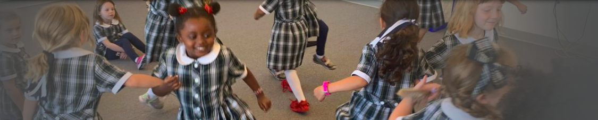
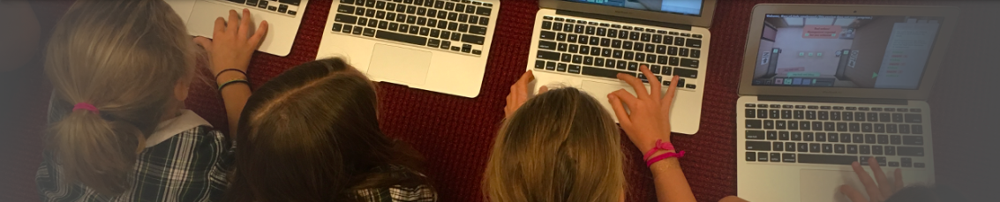

Dear All, Welcome to The Hamlin School website, and thank you for taking time to explore our magnificent school for girls. We have been on the same mission since 1896, when our courageous founder Sarah Dix Hamlin created a school where girls and young women would be “educated to meet the challenges of their time." Indeed, the challenges of the 21st century are numerous and immense, and I am passionate in my commitment to ensuring that Hamlin girls and graduates step forward as courageous citizens and compassionate leaders. Hamlin girls know that finding solutions to the world's problems is a "must-do."
Sarah Dix Hamlin's pioneering spirit continues to infuse the school today as our girls are taught to voice their ideas, questions, and opinions and to use their critical and creative thinking skills to transform their communities. Frequent opportunities for leadership and public speaking, competitive athletics and physical education, service learning, outdoor adventures, and the teaching of ethics and core values are integral to our program and complement the rigorous study of literature, history, mathematics, science, world languages, and the arts. Hamlin girls love to learn, they take pride in their many accomplishments, they are taught to be kind to themselves and others, and they feel confident and fully prepared when they move on to high school. We are a school that celebrates the value of both work and play, so that even as we prepare the girls for their bright futures, we also appreciate childhood and adolescence as special moments which should not be rushed. As I begin my twelfth year as head of school, I am particularly proud of the girls’ close connections to each other as well as their ability to act as confident individuals. Simply put, Hamlin girls know how to stand together and how to stand on their own. We expect our girls to recognize and treasure their interdependence while celebrating their individuality, and we encourage them to keep the school’s creed at the heart of their behavior and decision-making: Compassion, Courage, Honesty, Respect, and Responsibility. Dedicated and talented members of the faculty and staff arrive to work each day to ensure that Hamlin girls grow up to be kind and smart.
It is my pleasure and privilege to represent the Hamlin community and to lead it forward, and I look forward to sharing my vision for the school’s future with you. I extend a warm invitation to you to visit our urban campus both virtually and in person, and I eagerly await the opportunity to welcome you during a weekday tour.